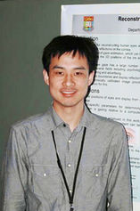
Xingdou Fu (付 星斗)
Chief Technology Specialist at the OMRON
Computer Vision/Robot Vision/AI
I work as a Chief Technology Specialist at the OMRON Innovation Center in Kyoto, Japan, leading R&D and strategic initiatives in 3D sensing and robot vision. What motivates me is staying at the forefront of research and translating cutting-edge ideas into real-world products.
Over the past 11 years at OMRON, I have worked on both fundamental and applied research in 3D sensors, gaze estimation, active vision, pose estimation, SLAM, etc. My work has resulted in several patents and contributed to innovative products in factory automation, healthcare, and driver monitoring systems.
I received my Ph.D. in Computer Vision from Huazhong University of Science and Technology in 2009, with joint training at the University of Illinois Urbana-Champaign.
Before joining OMRON, I held Postdoc and Assistant Professor positions in The Univesrity of Hong Kong and Kagoshima University Japan respectively, focusing on gaze estimation and 3D endoscopic scanning.
News
- [2026.03] 📣 Two patents (“Map Probability for Localization” and “Swarm-Based Mapping.”) filed and published!
- [2025.03] 🎙️ Invited speaker at IROS2025 workshop RGMCW！Detail Photo1 Photo2
- [2024.02] A paper accpeted by IROS2024. Project website Photo1
- [2023.01] A visit to Prof.Weiwei Wan at Harada lab in Osaka University.
- [2021.02] OMRON released a light-weighted 3D sensor for factory automation based on my patent. News1 News2 Patent
- [2018.06] Demonstrat a driver monitoring system with 3D gaze estimation using my patented 3D sensor at CVPR 2018. Photo1
- [2013.07] A supervised intern present "Realtime Hand-shape Recognition using RGB and Depth Sensor" at MIRU2013. detail
Selected Projects(Publications/Patents)
[2024] The First High-Speed Active vision Bin Picking in The World
A Low-Cost, High-Speed, and Robust Bin Picking System for Factory Automation Enabled by a Non-stop, Multi-View, and Active Vision Scheme
, Lin Miao, Yasuhiro Ohnishi, Yuki Hasegawa, Masaki Suwa
OMRON
Accepted by The 2024 IEEE/RSJ International Conference on Intelligent Robots and Systems (IROS 2024)
Project website Paper(IROS 2024)
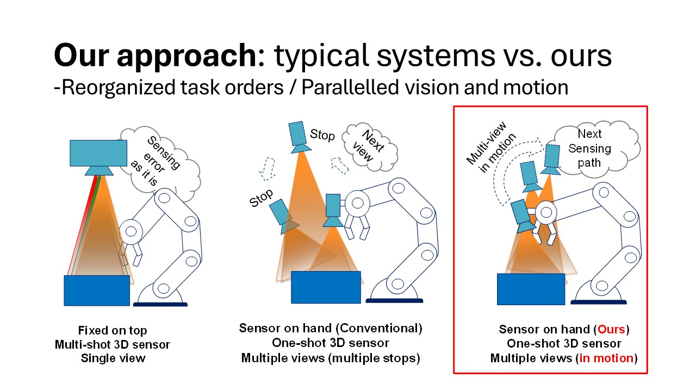
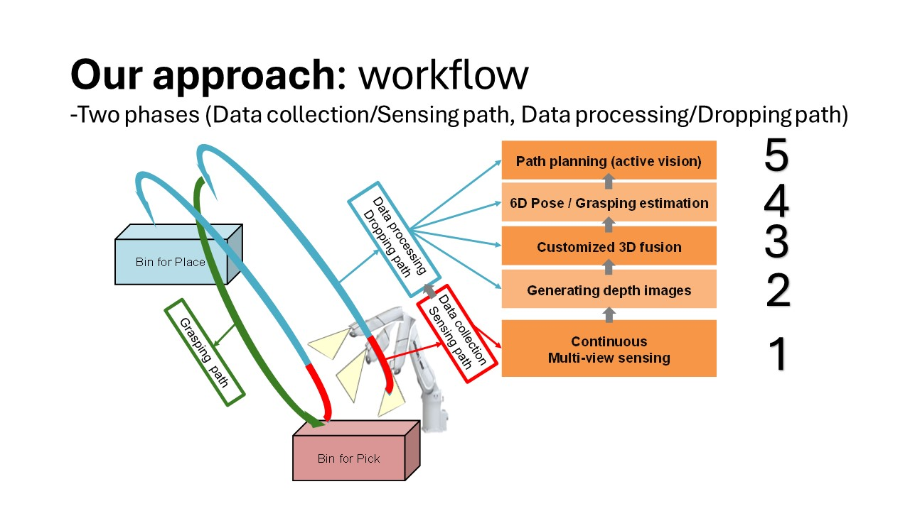
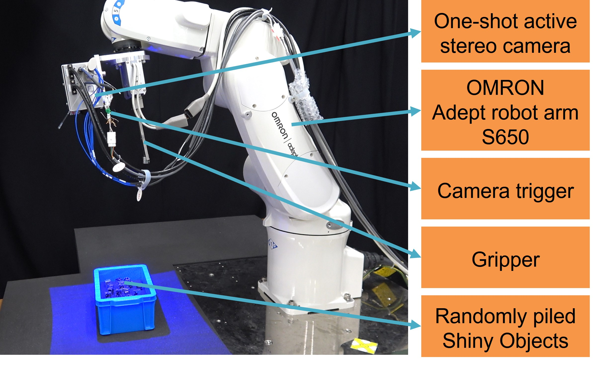
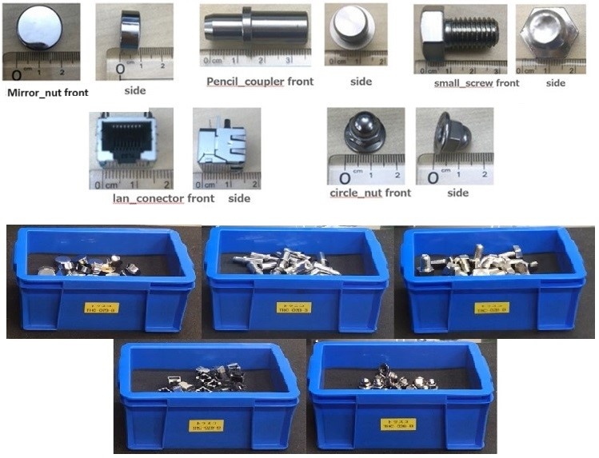
Bin picking in factory automation often struggles with sparse, noisy 3D data of metallic objects. Multi-view “sensor on hand” approaches improve robustness and flexibility but are usually slow, as sensing is decoupled from motion tasks. We designed a bin picking system that tightly integrates high-speed, multi-view active vision with robot motion. This parallelization not only accelerates sensing—averaging 0.635 s in takt time—but also plans the next view to maintain workflow continuity. Tested on five object types without human intervention, our system achieves a maximum sensing time of 1.682 s and an average pick rate over 97.75%. To our knowledge, this is the first high-speed active vision bin picking system.
[2013] Calibration of Projector with Fixed Pattern and Large Distortion
under 3D Reconstruction System for Capturing moving objects of Human body
sponsored by Japan Society for the Promotion of Science (JSPS)
Zuofu Wang, , Hiroshi Kawasaki, Ryusuke Sagawa, Ryo Furukawa
The computer vision and graphics lab, Kagoshima University, Japan
Accepted by The Thirteenth IAPR International Conference on Machine Vision Applications (MVA 2013)
Project website Paper(MVA 2013)
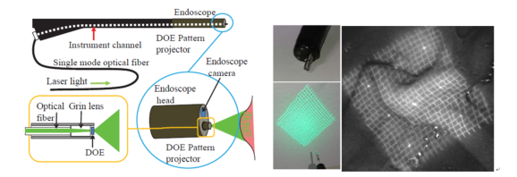
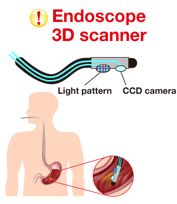
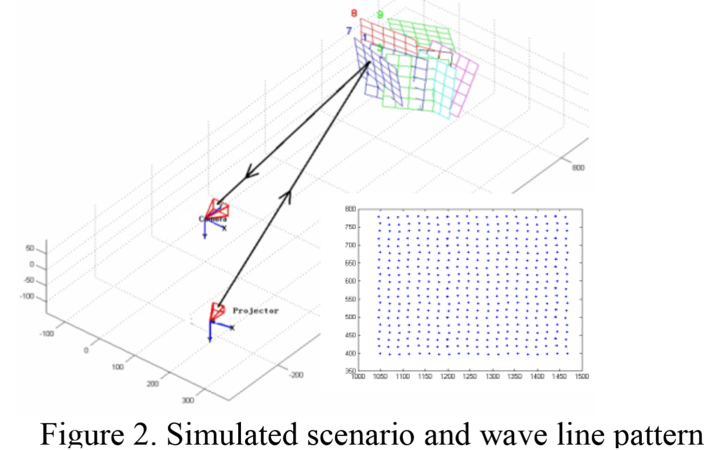
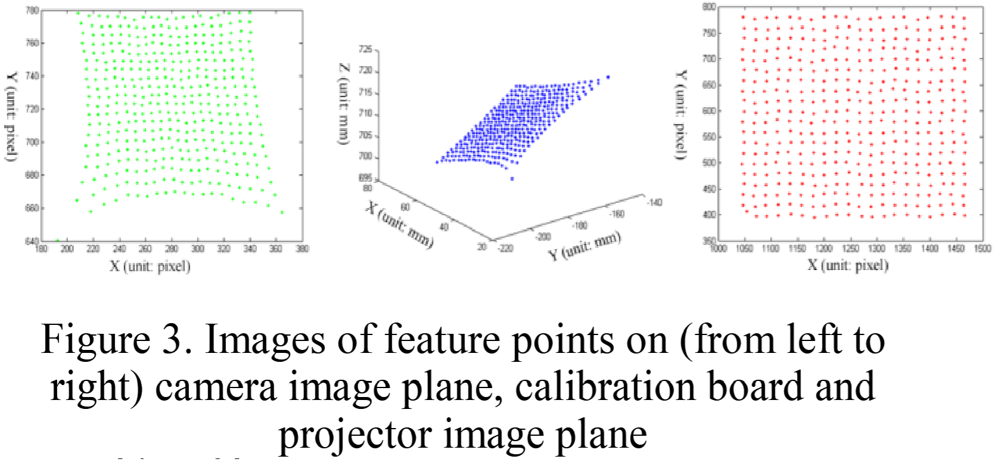
This research contributes to Hyper3DSensing, which develops ultra-fast, high-precision 3D sensing technologies for dynamic shape measurement. Applications include real-time human body capture, industrial inspection, and compact medical devices such as 3D endoscope scanners, where accurate reconstruction under strict optical and hardware constraints is essential. The project focuses on a specialized projector calibration for structured light systems with fixed patterns and wide-angle optics—conditions where conventional methods often fail. Fixed-pattern projectors suit miniaturized devices because they enable compact, lightweight designs. This calibration ensures geometric consistency and depth accuracy, enabling reliable high-speed 3D measurement in compact systems.
[2009-2010] Reconstruction of Display and Eyes from a Single Image
Dirk Schnieders, Under supervision of Prof.Kwan-Yee K. Wong
Vision group, The University of Hong Kong (HKU), Hong Kong SAR
Accepted by The Twenty-Third IEEE Conference on Computer Vision and Pattern Recognition (CVPR 2010)
Project website Paper(CVPR 2010)

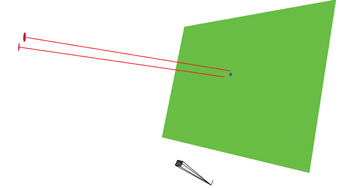


This paper introduces a novel method for reconstructing human eyes and visual display from reflections on the cornea. This problem is difficult because the camera is not directly facing the display, but instead captures the eyes of a person in front of the display. Reconstruction of eyes and display is useful for point-of-gaze estimation, which can be approximated from the 3D positions of the iris and display. It is shown that iris boundaries (limbus) and display reflections in a single intrinsically calibrated image provide enough information for such an estimation. The proposed method assumes a simplified geometric eyeball model with certain anatomical constants which are used to reconstruct the eye. A noise performance analysis shows the sensitivity of the proposed method to imperfect data. Experiments on various subjects show that it is possible to determine the approximate area of gaze on a display from a single image.
[2007-2008] Multi-Camera 3D Facial Motion Capture
Early pioneer work in building 3D face expressioin recognition datasets worldwide
, Yuxiao Hu, Hao Tang, Under supervision of Prof.Thomas Huang
IFP Lab, University of Illinois Urbana-Champaign, USA
Project website Paper


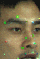

This project aims to build a prototype system to capture the 3D motion of key facial feature points for constructing a feature-based 3D facial motion database, supporting future 3D expression recognition research. The captured data can also be used to drive a 3D face model for realistic facial animation. The system uses five synchronized cameras arranged in a semicircle to form four stereo vision pairs for full-face 3D measurement. Colored markers are placed on predefined facial points. Each stereo pair performs dynamic 3D reconstruction within its region, and all data are unified in a global coordinate system. Markers are assigned unique IDs and tracked across frames using the CamShift algorithm. Epipolar constraints are applied to verify tracking consistency and improve robustness.
[2004-2006] 3D Realistic Portrait Data Acquisition
Early pioneer work in building 3D face recognition datasets worldwide
5-10 years earlier than consumer 3D sensing device Microsoft Kinect and Intel Realsense!
, Prof. Pingjiang Wang, Prof. Xiaoqi Tang, Prof. Jihong Chen
Huazhong University of Science and Technology, China
Project website Paper


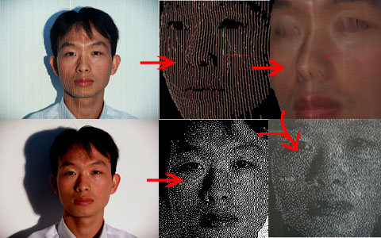
This project is funded by the National Natural Science Foundation of China (Project ID: 50175033) and is considered early pioneer work in building 3D face recognition datasets worldwide through 3D portrait measurement. Our 3D facial acquisition system predates consumer scanners like Kinect Fusion and Intel RealSense by 5–10 years. The 3D points were laser-engraved in glass to showcase precision, but the data also supports applications like 3D face recognition.
We developed a grating-projection structured-light 3D measurement system using a customized DSLR Nikon camera and a self-made structured-light projector, which aims to acquire high-accuracy, natural-looking 3D portrait data. The system captures two quick images—one with grating projection for 3D points, and one with normal lighting for grayscale. The grayscale image is then dithered and mapped onto the 3D mesh, rearranging the 3D points to achieve a more realistic and natural effect.
Career
2020.4-Now as Chief Technology Specialist at
OMRON Corporation
Kyoto, Japan 619-0225
2014.7-2020.3 as Senior Researcher at
OMRON Corporation
Kyoto, Japan 619-0225
2011.6-2013.6 as Assistant Professor at
Computer Vision and Graphics Group
(Now moved to Kyushu University)
Kagoshima University
Kagoshima, Japan 890-0065
2009.9-2010.9 as Postdoc Research Fellow at
Computer Vision Group
The University of Hong Kong
Hong Kong SAR, China
2007.9-2008.9 as Visiting Scholar at
Image Formation and Processing Group (IFP)
Beckman Institute
University of Illinois at Urbana and Champaign
Urbana, IL, USA 61801
Education
Ph.D. (Sept, 2004-June, 2009)Huazhong University of Science and Technology , China
Major: Computer vision
Supervisor: Prof. Pingjiang Wang, Prof. Xiaoqi Tang, Prof. Jihong Chen
Joint training (Sept, 2007-Sept, 2008) with
University of Illinois at Urbana-Champaign , USA
Major: Computer vision
Supervisor: Prof. Thomas Huang
Contact
Email：write2fxd@gmail.com